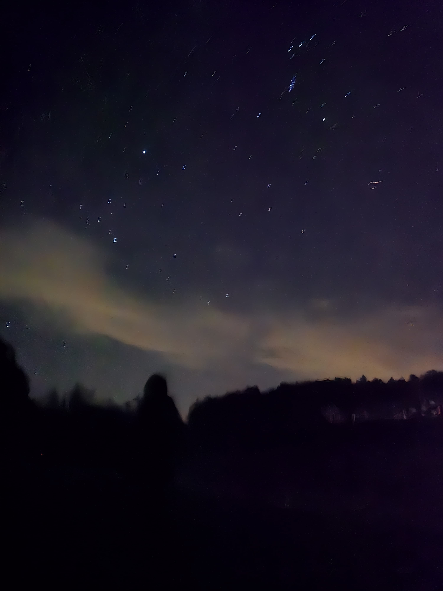

Software Developer | Machine Learning Enthusiast
👋 Hey there! I'm a Master's student in Electrical and Computer Engineering at Georgia Tech, on a mission to harness the power of technology to reshape society. With three years of industry experience building scalable and resilient systems in the finance sector, I've learned how to blend innovation with execution. But here’s something cool—I can speak five languages (both human and programming 😉), making me a true polyglot in tech and beyond! My passion lies in software development and machine learning, and I’m always up for solving real-world challenges with cutting-edge solutions. Right now, I’m actively seeking internship opportunities in software engineering and ML, where I can push boundaries, build impactful products, and collaborate with like-minded innovators. Let’s connect and create something awesome together! 🚀
BioMIB Lab, Georgia Tech | Fall 2024
Explored causal impact of posterior vs. anterior surgical approaches on postoperative complications using TARNet, CFRNet, and CatBoost.
Tech: Python, PyTorch, CausalML, Scikit-Learn
Submitted to IEEE Big Data Mining.
Georgia Tech | Sep 2024 - Nov 2024
Developed a multi-turn dialogue system for disease prediction, improving diagnostic accuracy through iterative Q&A interactions.
Results: Achieved 94% accuracy in diagnosis by integrating symptom extraction, Retrieval-Augmented Generation (RAG), and likelihood-based models.
Tech: Python, LangChain, LLMs, NLP, RAG
Research Experience, VJTI | 2020-2021
Proposed a Graph Attention Network for assessing cognitive workload from EEG signals.
Tech: Matlab, Python, PyTorch, GNN, Signal Processing
Published in 2021 IEEE 20th ICCI*CC
Read PaperLive Counts App: Enhancing a real-time opioid monitoring app (Flutter, AWS EC2, RDS).
Pedestrian Flow Tracking: AI-based tracking for urban mobility (Python, OpenCV, Deep Learning).
AskAL: AI-driven assistant automating client queries (Python, NLP, Flask, ELK, Kafka).
What-If: Risk simulation engine preventing incorrect trades (Java, Spring Boot, Microservices, SQL).
Wholesale Credit Risk: Real-time trader’s dashboard (WebSockets, Kafka, Elasticsearch).
Global Recon-Replay: Automated transaction validation, reducing costs by 35% (Java, Spring Boot, MongoDB, Jenkins).
Subscription System: Event-driven system reducing manual clicks by 55% (Observer Pattern, Kafka, Email API).
Mongo Migration: Security upgrade reducing vulnerabilities by 88% (Java, MongoDB).
Stock Market Analysis: Built APIs analyzing stock trends (Spring Boot, MongoDB, REST APIs).
Data Pipeline Automation: Engineered an automated data pipeline (Jenkins, Docker, Python).
Hackathons: Secured 2nd Place at the Morgan Stanley Code to Give Hackathon Alpharetta (2024), People’s Choice Award at the Markets Tech Hackathon, Citi, 1st Place at the Geeks+ Hackathon, Citi, Qualified for Smart India Hackathon - Stage 2.
Mentorship: Mentored 25+ interns, guiding project development, code reviews, troubleshooting, and final presentations.
Technical Training: Led workshops on Java, Python, Web development, and Git for 200+ students as part of the "Community of Coders" (COC) committee.
When not immersed in tech, I unwind by binge-watching movies, cooking meals, and chasing the stars.
